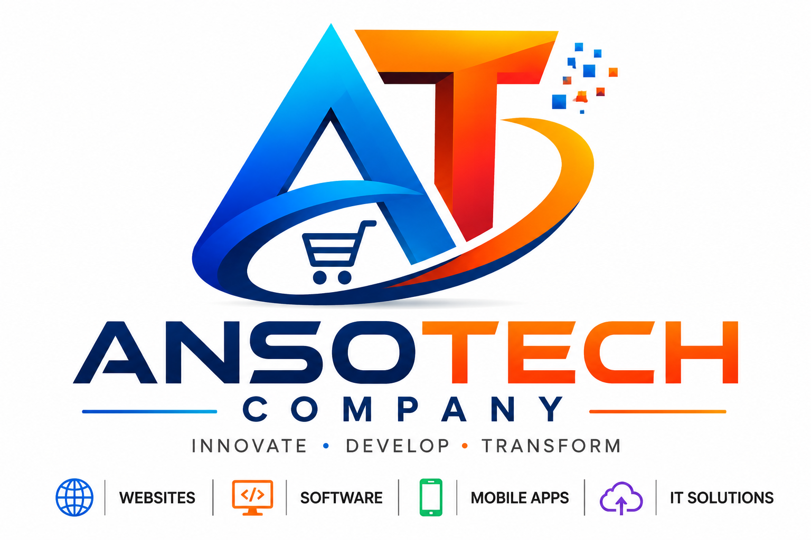

Official Enterprise DocumentationFull-Stack Software Architecture, Modern Web Platforms, Campus Network Engineering & Wazuh SIEM Cyber Security
AnsoTech Digital Systems is a technology engineering firm based in Kampala, Uganda. The organization operates at the intersection of enterprise software development and secure network infrastructure management, catering to commercial enterprises, microfinance organizations, educational institutions, and public sector organizations.
AnsoTech delivers end-to-end digital transformation—ranging from high-performance React/Node.js web portals and PostgreSQL databases to physical multi-building Cisco campus network designs and automated Wazuh SIEM security monitoring.
Our operational model is segmented into two main technical divisions that collaborate on integrated client projects:
Every system deployed by AnsoTech adheres to three non-negotiable standards:
AnsoTech utilizes a modern, modular JavaScript ecosystem engineered for high concurrency, low latency, and straightforward cloud deployment.
+-----------------------------------------------------------------------+
| CLIENT FRONTEND LAYER |
| React.js / Next.js | Tailwind CSS | Dynamic State Management |
+-----------------------------------++----------------------------------+
|| REST / JSON API
+-----------------------------------vv----------------------------------+
| BACKEND SERVICE LAYER |
| Node.js Server | Express Router | JWT Auth & Security Middleware|
+-----------------------------------++----------------------------------+
|| Object Relational Mapping (ORM)
+-----------------------------------vv----------------------------------+
| PERSISTENCE & STORAGE |
| PostgreSQL (ACID Transactions) | MongoDB (Document Catalogs) |
+-----------------------------------------------------------------------+
A specialized ledger platform designed for microfinance institutions and credit facilities operating in emerging markets.
Scalable digital commerce platforms built for multi-category retail businesses and product distributors.
AnsoTech designs, provisions, and maintains enterprise campus networks for organizations requiring fault-tolerant, high-throughput local connectivity.
+-----------------------+
| ISP Gateway Router |
+-----------+-----------+
|
+-----------v-----------+
| Core Switch (Layer 3)|
+-----+-----------+-----+
| |
+-----------------+ +-----------------+
| |
+-----------v-----------+ +-----------v-----------+
| Building A Switch | | Building B Switch |
| VLAN 10: Admin | | VLAN 30: Lab / Staff |
| VLAN 20: Finance | | VLAN 40: Guest / Wi-Fi|
+-----------------------+ +-----------------------+
To reduce broadcast domains and secure inter-departmental communications, networks are segmented into dedicated Virtual LANs:
| VLAN ID | Subnet Allocation | Department / Usage | Security Access Level |
|---|---|---|---|
| VLAN 10 | 192.168.10.0/24 | Corporate Administration | High (Restricted Access) |
| VLAN 20 | 192.168.20.0/24 | Finance & Payroll Systems | Critical (Isolated) |
| VLAN 30 | 192.168.30.0/24 | Staff & Workstations | Medium (Filtered Internet) |
| VLAN 40 | 10.0.40.0/22 | Guest Wi-Fi Access | Low (Internet Only / No LAN) |
AnsoTech builds host environment infrastructure that maximizes physical hardware utilization while ensuring isolated execution spaces for database instances, application servers, and security appliances.
We deploy virtualization technologies—specifically VMware Workstation Pro and VMware ESXi—to host multiple virtual machines on centralized server hardware.
Ubuntu Server serves as our primary OS choice for running backend web platforms, reverse proxies, and cybersecurity software.
# Sample Hardening Workflow Implemented by AnsoTech Engineers $ sudo ufw default deny incoming $ sudo ufw default allow outgoing $ sudo ufw allow 22/tcp comment 'SSH Access' $ sudo ufw allow 80,443/tcp comment 'Web Traffic' $ sudo ufw enable
AnsoTech deploys Wazuh SIEM to provide clients with continuous visibility into network anomalies, unauthorized system access, file integrity changes, and regulatory compliance status.
+---------------------+ +---------------------+ +---------------------+
| Network Endpoint A | | Ubuntu Server B | | Cisco Core Switch |
| Wazuh Agent Active | | Wazuh Agent Active | | Syslog Exporter |
+----------+----------+ +----------+----------+ +----------+----------+
| | |
+---------------------------+---------------------------+
| Encrypted Log Shipping
+----------v----------+
| WAZUH INDEXER & |
| MANAGER SERVER |
+----------+----------+
|
+----------v----------+
| WAZUH DASHBOARD |
| Real-Time Alerts |
+---------------------+
To ensure high standards and transparent milestone tracking across both software and network engineering projects, AnsoTech follows a structured 5-phase delivery model.
Conducting detailed physical site surveys for network installations, or mapping out data models, user roles, and functional scope for software systems.
Creating CAD network topology diagrams, dynamic IP addressing tables, database Entity-Relationship Diagrams (ERDs), and Figma application wireframes.
Agile software development iterations combined with hardware provisioning, cable termination, switch flashing, and virtualization server installation.
Executing stress tests, SQL injection checks, network vulnerability scans via Wazuh SIEM, and User Acceptance Testing (UAT) with key client stakeholders.
Final domain cutover, cloud deployment, physical network commissioning, complete documentation delivery, and administrator training sessions.
| Package Category | Included Core Deliverables | Tech Stack | Standard Fee |
|---|---|---|---|
| Business Web Portal | Responsive UI, Contact System, SEO, CMS Admin | React, Tailwind, Vercel | $600 |
| E-Commerce Platform | Catalog, Cart Sync, Mobile Money API, Admin Dashboard | React, Node, Express, MongoDB | $1,500 |
| Microfinance Platform | Borrower Registry, Interest Engine, Reminders, Ledger | React, Node, PostgreSQL | $2,200 |
| School ERP System | Student Records, Grading Engine, Fees, Parent Portal | React, Node, PostgreSQL | $2,800 |
| Hospital EHR System | Patient Queue, Medical Logs, Pharmacy POS, Expiry Alerts | React, Node, Express, MongoDB | $3,200 |
| Infrastructure Package | Technical Scope & Hardware Deliverables | Starting Fee |
|---|---|---|
| Single Building Setup | Structural cabling plan, Cisco router/switch setup, Wi-Fi coverage | $800 |
| Campus Enterprise Network | Multi-building VLANs, EtherChannel links, Inter-VLAN routing, ACLs | $2,500 |
| Wazuh SIEM Deployment | Ubuntu server install, Wazuh manager config, log agent rollouts | $1,800 |
| Fully Managed Infrastructure | Campus Network + VMware Host Servers + Live Wazuh Security Suite | $4,500 |
To engage AnsoTech for software development contracts, network architecture deployments, or security audits, contact our technical desk through the channels below:
© 2026 AnsoTech Digital Systems. All rights reserved. This document is provided for official capabilities evaluation and client procurement purposes.